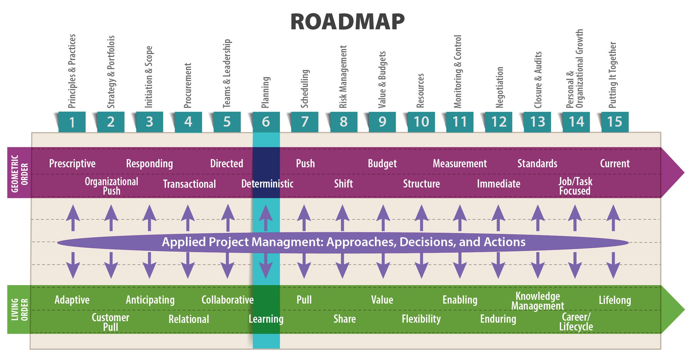
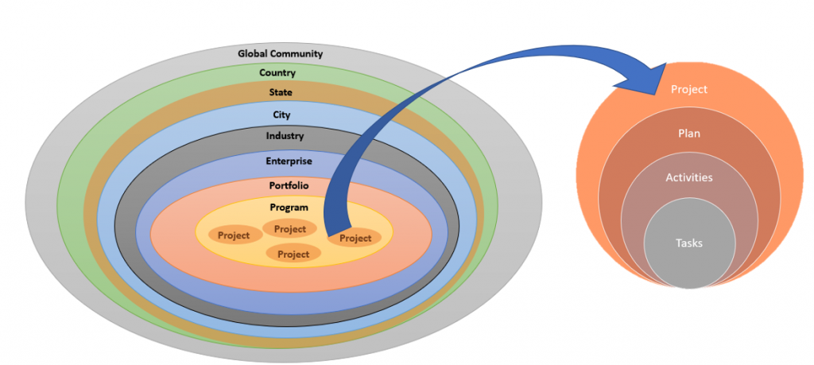
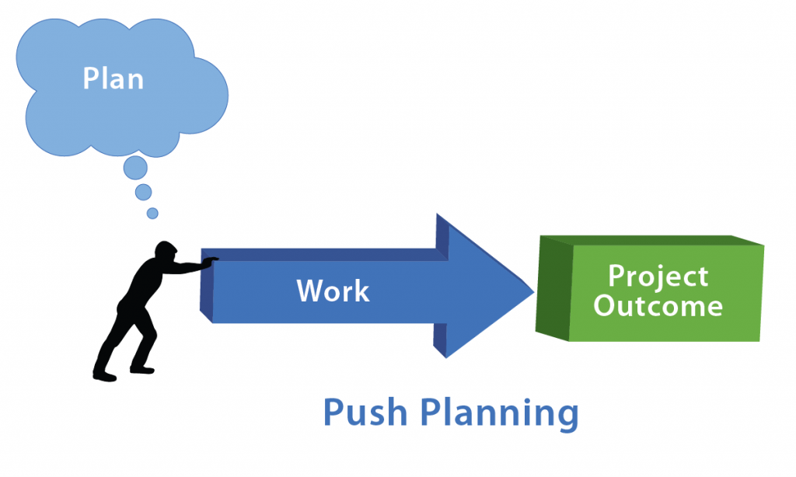
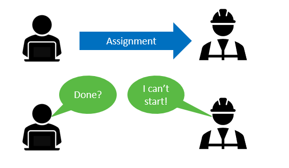
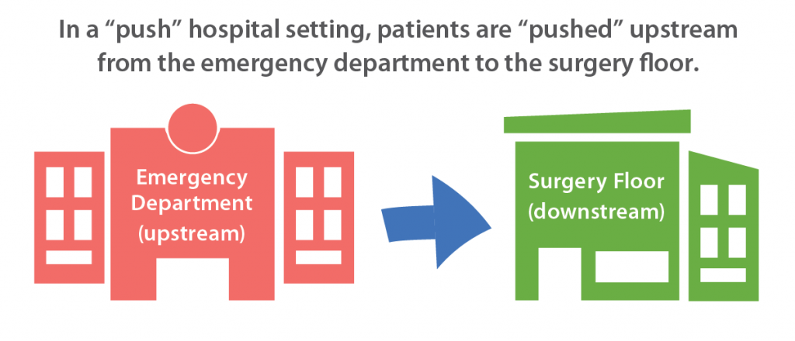
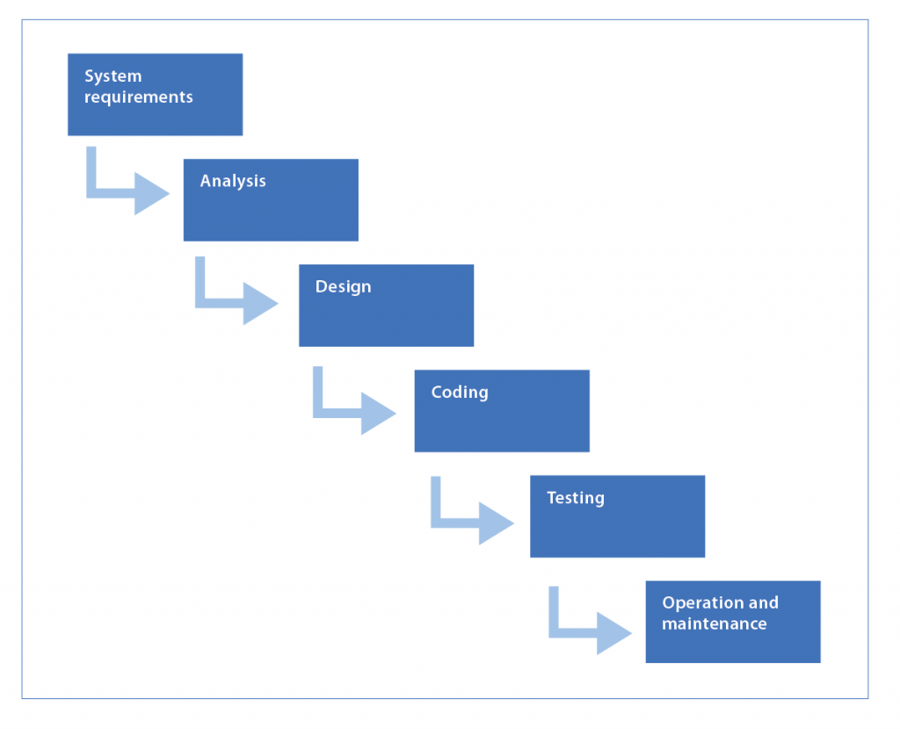
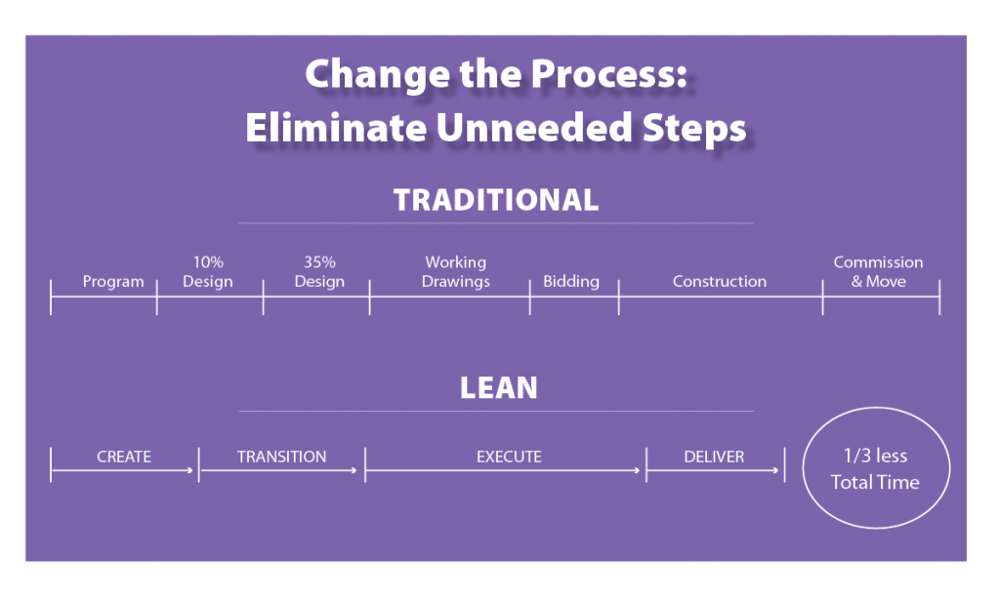
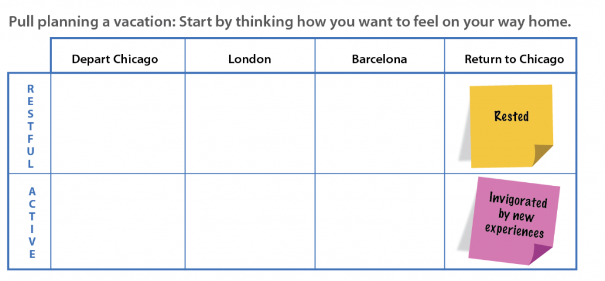
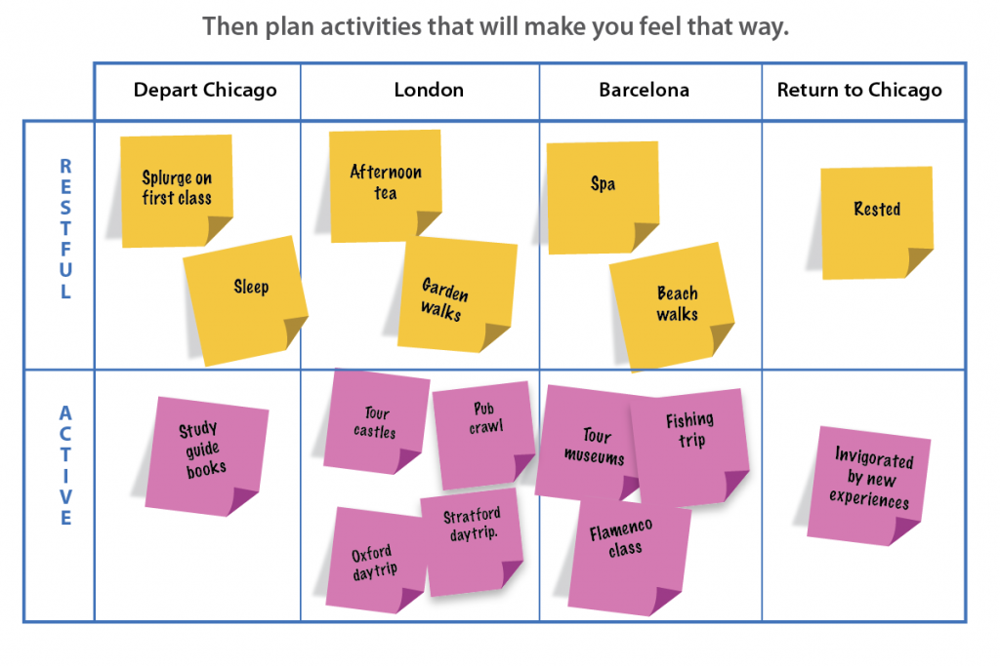

In preparing for battle, I have always found that plans are useless but planning is indispensable.
–Dwight D. Eisenhower, President of the United States (1953-1961), Supreme Commander of the Allied Forces in Europe (1943-1945)

Objectives
After reading this lesson, you will be able to
The Big Ideas in this Lesson
Merriam Webster’s definition of planning is “the act or process of making a plan to achieve or do something.” This suggests that the ultimate goal of planning is the plan itself. It also presumes that once a plan has been formulated, you only need to follow the plan to achieve the desired outcome. That’s fine for ordinary conversation. But when we begin to think about living order project planning, a more expansive understanding of the nature of planning emerges. In living order, planning is a process that prepares the project team to respond to events as they actually unfold. The whole point of planning is to develop strategies to mangage
Planning results in a plan, but the plan is not an end in itself. Rather, a plan is a strategic framework for the scheduling and execution of a project. It’s only useful if it includes the information team members require to begin moving forward. And it only remains useful if team members modify the plan as they learn the following about the project:
Die-hard geometric order planners take a deterministic approach, laboring under the false notion that once everyone agrees on a plan, the plan itself determines what comes next. Indeed, it is tempting to think you can nail down every detail at the beginning of a project and then get going without looking back. But effective living order planners understand that, especially early in a project, these details are nearly always provisional and subject to change. Thus, effective living order planners stand ready to alter their plans in response to what they learn in changing conditions. They also understand that the context in which a project unfolds has varying levels of detail and variability, with potentially thousands of decisions made over the project’s life cycle. Figure 6-1 shows the expanding circles of context surrounding an individual task within a project. Each circle adds its own variability and uncertainty to a project.

As Alexander Laufer and Gregory Howell explained in an article for Project Management Journal, a project leader’s work is founded in uncertainty (1993). Uncertainty is not an exceptional state in an otherwise predictable process of work, they argue. Instead, it is a permanent feature of modern work. What’s more, the longer the time between planning and implementation, the higher the uncertainty surrounding individual activities. Naturally, the higher the uncertainty in a project, the more difficult it is to plan, and the less effective the plans will be at articulating actions and outcomes. Finally, they emphasize that no amount of planning can eliminate the variability intrinsic to the work of a complex project.
Alexander Laufer and Gregory Howell remind that the variability intrinsic to the work of a complex project cannot be eliminated by planning (1993). But what exactly is a complex project? Are all difficult projects complex? In a blog post for Team Gantt, Tera Simon explains: “A complex project isn’t necessarily a difficult project. Projects can be difficult due to reasons such as cost or performance, but this doesn’t automatically mean the project is complex. Complexity refers to projects that include ambiguity or uncertainty. They are surrounded by unpredictability” (2016).
Examples of complex projects range from megaprojects like Boston’s Big Dig, to more focused undertakings like developing software for a medical technology that is not yet functional and that will be used by people in changeable healthcare settings. A truly complex project would have some of the following characteristics:
If you’re interested in a more theoretical investigation of the idea of complexity, read up on the Cynefin framework, which is a decision-making tool designed to help managers make sense of complexity. Created by David Snowden and Mary E. Boone, the Cynefin framework allows leaders “to see things from new viewpoints, assimilate complex concepts, and address real-world problems and opportunities.” It focuses on identifying the type of situation in which you are operating (simple, complicated, complex, or chaotic) and then making choices appropriate to that context.
For technical project managers, the framework’s most useful insight is the distinction between complicated and complex projects. Snowden and Boone discuss this idea in an article for the Harvard Business Review:
In a complicated context, at least one right answer exists. In a complex context, however, right answers can’t be ferreted out. It’s like the difference between, say, a Ferrari and the Brazilian rainforest. Ferraris are complicated machines, but an expert mechanic can take one apart and reassemble it without changing a thing. The car is static, and the whole is the sum of its parts. The rainforest, on the other hand, is in constant flux—a species becomes extinct, weather patterns change, an agricultural project reroutes a water source—and the whole is far more than the sum of its parts. This is the realm of “unknown unknowns,” and it is the domain to which much of contemporary business has shifted. (2007)
Further Reading
Planning is Learning
In living order, it’s helpful to think of a project as a knowledge development activity . Project Planning , then, is the continuous process of incorporating new knowledge into a project plan. At the beginning of highly complex or unfamiliar projects, you may know little to nothing about how to achieve the desired outcome. By the end, you know vastly more. The more you learn, the greater your ability to fine tune the plan to achieve the desired project outcome. This means that a plan will acquire detail as you move forward. It’s important to resist the temptation to include details about factors you don’t yet completely understand because those details will almost certainly turn out to be wrong. Take care not to plan at a level of precision that exceeds your understanding of the many factors that could affect the project.
When you commit to this adaptive approach to planning, you can treat project planning in a fundamentally different way. Instead of constantly asking, “How can I steer my project back onto the original plan?” you can ask, “How can I use this new knowledge to refine my plan and improve the likelihood of project success?” When you learn something, encounter a setback, or have a success, you can treat that experience as another data point to incorporate into the ongoing planning process. It’s a piece of information you didn’t have before, which you can then use to improve your overall project plan on your journey toward the project outcome.
Once you have accepted the inevitable transition from a state of ignorance to a state of discovery, you will begin to question the possibility of certainty in project planning. A good rule of thumb is that if you are certain about what the future holds for your project, you’re probably wrong or actually don’t need a project plan; a simple task list may work. This is especially true in fields where work occurs in varying locations, under changing, often unpredictable circumstances. As Dora Cohenca-Zall, Alexander Laufer, and others demonstrated in their research on construction project planning, “high levels of uncertainty are the rule rather than the exception” (1994). As we discussed in Lesson 1, modern projects unfold in what Peter Vaill calls a state of “permanent whitewater” (Laufer 2012). It’s simply not possible to foresee all the problems that might arise throughout the life of a project.
The ultimate goal of project planning is a well-thought-out strategy that has enough flexibility to adapt to developing circumstances. The planners themselves must continually engage in what psychologists call cognitive reframing, which means reconsidering events and facts to see them in a new way. Only then can they adapt to changing circumstances throughout the life of the project.
The goal of a project plan is to explain who creates what, how they create it, and for what purpose. In other words, a project plan is a tool for collaboration. The process of planning is itself a collaborative exercise that is often the first test of a team leader’s ability to build trust among members and to take advantage of the multiple perspectives offered by a diverse team. Success in planning requires all the teamwork skills and techniques at your disposal, which, as discussed in Lesson 5, includes reliable promising, emotional intelligence, a realistic outlook, and good communication skills. The more team members trust each other, the more willing they will be to take the kinds of risks required to adapt to changing circumstances.
In Becoming a Project Leader, Alexander Laufer, Terry Little, Jeffrey Russell, and Bruce Maas tell stories about project managers who navigated volatile, complicated projects by fostering adaptation and collaboration (2018). These successful managers combined four essential strategies:
In Becoming a Project Leader, Alexander Laufer, Terry Little, Jeffrey Russell, and Bruce Maas explain the value of a rolling wave approach to planning in volatile situations in which it’s difficult to make firm commitments. Successful project managers develop plans “in waves as the project unfolds and information becomes more reliable.” This approach involves combining “detailed short-term plans” with 90-day, medium-term plans, and more general master plans that cover the project’s duration:
This style of planning does not imply that decisions should be arbitrarily “put off until later.” Rather, it is an act of deliberately splitting off those planning aspects that can be acted upon more opportunely in the future. By applying this approach, two extreme situations are avoided. The first is the preparation of overly detailed plans too soon, which may lead to rapid obsolescence because some decisions are based on information provided by intelligent guesses rather than on reliable data. The other extreme situation is delaying the planning until all the information is complete and stable. In both cases, project effectiveness will suffer. One can make timely and firm decisions only by adopting the planning style that provides greater detail at the appropriate stage of the project. (18-19)
The traditional, geometric-order approach to planning is founded on the idea that, with enough research and forethought, planners can foresee most eventualities. In other words, geometric order planners assume that it is possible to know everything, or nearly everything, about a project before it begins. Because planners assume they will have little need to adjust as the project unfolds, geometric order planning presumes a linear progression of sequential, predictable activities. Each participant has a specific place in a hierarchical, sequential order.
Geometric order planning works well for straight-forward, predictable activities that are easy to repeat, such as laying new sewer pipe. It tends to focus on optimizing individual activities, with each activity presumed to occur as scheduled. The problem with this way of thinking is that it leads planners to disregard the uncertainty associated with activities that are dependent on each other—for example, suppose you are designing a product for a foreign market and a trade war breaks out, placing a large tariff on your product, making it much more expensive. In that case you would need to rethink your product, its potential markets, and perhaps where it is manufactured.
The term push plan is used to describe a project plan founded on an assumption of geometric order principles. Once the plan is complete, it’s assumed the work will unfold accordingly, resulting in a predetermined project outcome. (See Figure 6-2.) Once a push plan is set in motion, stakeholders tend to focus on keeping the parts of the plan moving forward. The term push was first used in manufacturing to describe a system in which “production is based on a projected production plan and where information flows from management to the market, the same direction in which the materials flow” (BusinessDictionary n.d.).

A push system is typically built around forecasts of customer demand, which may or may not be right. However, once a push plan is set in motion, the actual demand for the final product is of less concern during production than the need to keep the parts of the plan moving forward. A push plan can be appropriate where the project type and the activities to be performed are well known and very similar to previous projects. It is also appropriate when producing a commodity for a general audience. In construction and manufacturing, the ultimate goal of push planning is to produce a product for the least possible cost. In a push-plan project, subcontractors focus on completing their work on time and on budget, so they can call their work finished and move on to another project. It is built around forecasts of labor availability (see Figure 6-3 ), which are actually hard to predict and are often wrong. Meanwhile, managers are typically judged by their ability to meet the predefined production schedule. In this way, individual self-interest drives a push project forward, with limited regard for a project in which workflow is managed and waste prevented by collaboration and coordination.

You’ll sometimes find push planning referred to as make-to-stock—the idea being that a push manufacturing system processes large batches of items at the fastest possible rate, based on forecasts of demand, and then moves them “to the next downstream process or into storage” (Plex 2017). That’s a simplistic way of thinking about push, but it’s a good way to start getting a grasp on the basic idea. To that end, here are some simplified examples of push systems:
For a humorous yet informative example of extremely bad push planning, see the famous chocolate-wrapping scene from I Love Lucy, in which poor Lucy and Ethel attempt to keep up with an increasingly fast conveyor belt:
More complicated examples of push planning can be found in every industry, including manufacturing, product development, healthcare, and construction. You can identify a push system by looking at the various processes in a particular system and identifying what triggers a particular process to begin work. In a push system, an upstream process is responsible for pushing work onto the next downstream process. For example, in a hospital, the emergency department might push a newly arrived patient downstream, to the surgery floor to await a procedure (See Figure 6-4.) If the surgery floor does not have any beds available, the patient will have to wait in the emergency department until one opens up. In this push setting, where “the transition of work is the responsibility of the upstream (i.e., prior) process,” it’s up to the emergency personnel to manage the situation, finally ensuring that the patient does indeed get a spot downstream on the surgery floor (Institute for Healthcare Improvement n.d.).

A push system lacks any explicit limit on the amount of work that can be in process in the system at any one time (Hopp and Spearman 2004, 142). Once work begins, it is supposed to continue, with no regard for delays due to errors, resource availability, and other problems. Thus, when problems do arise, the system slows to a crawl or stops entirely because it lacks the built-in mechanisms for evaluating and improving flow found in Lean and other living order methodologies.
In software development, the classic example of push planning is the waterfall model, illustrated in Figure 6-5. In its purest form, the waterfall model conceives of software development as a set of discrete, sequential steps. It presumes a highly predictable project outcome, with little or no opportunity for adjustments as the project unfolds. Indeed, once the project reaches the testing stage, costs and other considerations make it nearly impossible to go back and alter the original plan.

The many variations of push planning are fundamentally appealing because they presume that the world operates according to a prescribed set of rules. After all, as Isaac Newton taught us, we live in a world where the laws of physics produce predictable results. If you drop a football, you know it will hit the ground. If you throw it, you know it will travel through the air. In other words, we are wired to think that careful planning can produce predictable results. But that static, geometric order way of thinking does not adequately reflect the reality of modern project planning. We must take living order into account.
The Waterfall model was first introduced by Winston W. Royce, in a 1970 paper entitled “Managing the Development of Large Software Systems.” Royce described an ideal development process, in which developers engaged in detailed planning at the beginning of the project and then wrote the code to match minute specifications, producing a predictable outcome. But Royce was not recommending this as a realistic way to develop software. In fact, the sentence immediately following his waterfall diagram reads, “I believe in this concept, but the implementation described above is risky and invites failure” (Royce). Much to his dismay, his description of the overly simplistic waterfall method tore through the software development world of the 1970s and 1980s like wildfire. For an engaging telling of the history of the waterfall method, see this video by Glen Vanderburg, starting at 9:00:
“Real Software Engineering – Glenn Vanderberg, Lone Star Ruby Conference 2010.”
Pull planning is the practical application of the living order approach to project planning. It is collaborative, flexible, and recursive, and is especially suited for highly complex projects in which stakeholders have to adapt to new information. It presumes a group of workers who coordinate regularly, updating their plan to reflect current conditions. It focuses on producing as much as can actually be completed and no more. The ultimate goal of pull planning is creating the best possible value.
The thinking behind pull originated in 1948 with Taiichi Ohno, known as the “father of the Toyota Production System,” which in turn led to Lean and Agile. Living in post-World-War-II Japan, where food shortages were a frequent problem, Ohno drew his inspiration from American supermarkets, with their seemingly magical ability to provide whatever customers wanted, when they wanted it:
From the supermarket we got the idea of viewing the earlier process in a production line as a kind of store. The later process (customer) goes to the earlier process (supermarket) to acquire the needed parts (commodities) at the time and in the quantity needed. The earlier process immediately produces the quantity just taken (re-stocking the shelves). (Ohno 1988, 26)
A pull system is sometimes referred to as make-to-order—suggesting that a customer places an order, at which point the entire production facility kicks into gear to create the item required to fulfill that one order. That’s a highly simplified version of pull, but it’s a helpful starting point. These two supply-chain examples illustrate this elementary version of pull:
In reality, the concept of the “customer” means more in pull than just the end user. In a pull system, a downstream process is the customer of the prior, upstream process. Here’s what this would mean on a construction site:
All work is done at the pull of the customer. So the electrician is completing her in-wall rough-in so that the drywaller, her customer, can start standing rock. The drywaller is hanging rock so that his customer, the painter, can begin work. By working backward from a project milestone … we make sure that all work is pulled into the plan. The result is that work happens at the right time, not just whenever it can. (Lemke 2016)
Pull planning is a key concept in Lean, which values the seamless flow of work without the inevitable stops and starts (i.e., waste) that characterize push planning. As illustrated in Figure 6-6, pull planning eliminates unnecessary steps, saving as much as one-third of the time required to complete a similar project designed according to a traditional push plan.

In Lean thinking, planning is a fluid, real-time process. To be an effective Lean project planner, you need to understand that living order continues to evolve. Planning is no longer about communicating and reinforcing a formal, predefined static plan to all team members. It’s about giving each team member a way of thinking about the project and a process for incorporating new knowledge into the plan, with regular options for resetting the plan as the project unfolds.
In pull planning, you start by identifying the desired end state of the project, which is the value you want to create. Then you work backwards to determine the most efficient (least wasteful) way to get there. This is similar to a crew of kayakers trekking to the bottom of a stretch of rapids and looking back up to formulate a plan for traversing them. After that, they can return to the beginning of the whitewater and attempt to navigate the rapids with a better sense of the challenges that lie ahead.
The best way to grasp the nature of a pull system is to compare it to push. As a simple example, suppose you are planning a European vacation. If you were taking a push planning approach, you would start making a list of all the recommended sites in the countries you will be visiting. The result would be a schedule that allocates all the available time to the various destinations. Such a vacation plan is essentially a checklist of things to do or see. By contrast, a pull approach would be entirely focused on how you want to feel on the way home—that is, the value you want the trip to create. You might review the same list of possible sites and activities, but your decisions about which to include in your plan would depend on how you want to feel when the trip is over.
Figure 6-7 illustrates the beginnings of a pull plan for two possible types of vacations—one that leaves you feeling rested, and one that leaves you feeling invigorated by new experiences. As with all pull plans, the secret is to start at the end. How do you want to feel on the way home? Then, as shown in Figure 6-8, you can add activities to your plan that ensure you end up feeling that way. As you can see, Post-it Notes are used in both figures. While there are many scheduling and planning programs to choose from, Post-it Notes, a very low-tech option, are used widely in pull scheduling because they are easy to move around, thus encouraging the planner to try out new ideas.


For a more extensive introduction to pull planning, see this one-hour video, produced by the authors of this book, which uses planning a vacation as a way to explain essential pull-planning concepts.
As you learn to identify push and pull at work in various environments, you’ll begin to see how organizations use one or the other, or combine both approaches to achieve their goals. The fact is, “in the real world, there are no pure push or pure pull systems” (Hopp and Spearman 2004, 143). You’ll also discover that the concepts of push and pull are used to emphasize different concerns in different contexts.
For example, consider how the terms are used in the world of supply chain management, which encompasses “all the activities that must take place to get the right product into the right consumer’s hands in the right quantity and at the right time – from raw materials extraction to consumer purchase” (Mays Business School n.d.). In supply chain management, push/pull experts often speak of the boundary between a push portion of a system and the pull portion (Sehgal 2009). As in the following example, the boundary between push and pull usually arises after a product has been manufactured in a push environment, based on general forecasts of consumer demand, and warehoused until specific requests from specific customers pull the product into the marketplace:
A food manufacturer may make mushroom soup that they brand in a few ways— their own label plus those of several supermarket chains. The manufacturer has a good idea of the amount of soup that they need each month. They are less sure, however, of how to package it to meet demand. As a result, they will likely choose to mass-produce the mushroom soup and inventory it in unlabeled cans until orders materialize. Then they can quickly label the cans and ship them out when customers place their orders. (McGinley 2016)
But don’t let these more specialized applications of the concepts of push and pull distract you from the fundamental meaning of pull. Whatever your area of expertise, you’ll never go wrong by applying some pull thinking to a new project. What’s the desired end-state of the project? What value do you want the project to create? Most importantly, how will you collaborate with the project stakeholders to achieve it?
Matthew David Potter, a Masters in Engineering Management student at the University of Wisconsin-Madison, noted that, when working on a class presentation, he tried to focus on what would be useful for his fellow students, rather than what he wanted to include. In other words, like all good communicators, he zeroed in on the needs of his audience. Later, he realized that focusing on the audience is actually a form of pull thinking—starting at the desired end-state, and then figuring out how to achieve it.
He summarizes his experience as follows:
Agile software development emphasizes an iterative approach to planning. Whereas the traditional, waterfall approach to software development presumes few changes to the project after the software requirements have been formulated, Agile is specifically designed to allow project participants to adapt to changing circumstances, the most important of which is often the customer’s evolving notion of the software requirements. Rather than planning the entire project at the beginning, Agile project planners focus on creating accelerated, evolving iterations of the product in one- to two-week development sprints.
Unlike traditional project management, which presumes a well-defined beginning to a project, with tasks unfolding until the well-defined end, Agile project management has an iterative, circular flow. The engine that propels this flow is continuous feedback from the product owners about how well the software meets their needs. As the software begins to take shape, product owners are continually asked to make decisions
about which features they value most, and which might be dispensed with in order to meet the project budget and schedule. This means that, in Agile development, the planning doesn’t end until the project is over. Predictability emerges if you give it time to emerge naturally and eludes you if you try to force it too soon. One of the gifts of Agile is that it is self-calibrating. Once you’re run a few sprints, an actual rate of progress starts to emerge, calibrated to the particular team, sponsor, technology, and requirements. (Merrill 2017)
As software grows increasingly important in many types of products, it’s likely that Agile, with its cycles of fast feedback and revisions, will become more common in product development, including among large manufacturers such as John Deere. The cycles of Agile development produce working software faster, making it easier to get feedback from marketing and customers earlier in the product development life cycle. Agile engineering, as this new form of product development is called, encourages teams to learn about their product and make improvements faster than they could with traditional product development. In a blog post for FormLabs, a manufacturer of high-end 3D printers, Joris Peels writes,
Learning from failure through prototypes helps companies quickly build better products. By validating assumptions and collecting data, these products are made in a more accurate, evidential way.
With traditional methods, teams painstakingly make world maps and then spend months planning a possible route through this imagined world. Only then do they have a product and really know where they stand. With Agile Engineering, products emerge in the first week of product development. Teams set off and check their compass often. (2016)
Continuous improvement is “a method for identifying opportunities for streamlining work and reducing waste” (LeanKit n.d.). Known in Lean as kaizen (Japanese for improvement), continuous improvement is a key concept in Lean and Agile, but is a motivating force in all types of organizations. To fully incorporate continuous improvement into your organization’s philosophy, you need to build it into projects, starting with the planning phase. Indeed, the very process of planning is itself a continuous improvement activity because it involves looking to the future and thinking about how to do things better.
Continuous improvement is an important concept for organizations seeking to make systematic sustainability changes, and for individual projects concerned with sustainability. This is especially true for projects unfolding over a long period of time because new sustainability technologies might become available during the course of the project. According to Bill Wallace, author of Becoming Part of the Solution: The Engineer’s Guide to Sustainable Development , continuous improvement programs devoted to amplifying a company’s sustainability efforts should include the following:
Baseline assessment. The firm should determine its current environmental and societal impact. This should be done by first defining the scope of the firm’s activities and assessing the impacts of those activities against existing performance standards, norms, or other benchmarked firms….
Set objectives for improvement. Based on the results of the baseline assessment, the firm should devise a comprehensive set of objectives for improvement. The objectives should be measurable against established indicators. Schedules…should also be established….
Implementation. Once objectives and schedules are set, the firm should devise programs for implementation and allocate sufficient funding to achieve the objectives. Regular sustainable performance reports should be generated and sent to top management…. The reports should also contain an assessment of technology developments that could change current practices.
Review and revision. The firm should schedule periodic reviews…to check progress against the objectives and plans and to see how program funds were spent. Based on program performance, client expectations, new benchmarks, new technologies, firmwide performance, or other variables, the objectives should be revisited and revised accordingly. (2005, 95)
In addition to creating the project plan, you need to create a contingency plan, which is a plan for addressing key possible obstacles to project success. A contingency plan defines alternate paths for the project in case various risks are realized. A contingency plan typically includes a contingency fund, which is an amount of resources set aside to cover unanticipated costs. Contingency plans and funds are necessary because even the most seasoned project planner sometimes succumbs to excessive optimism, assuming everything will go well and that all resources will be available when needed. Also, no matter how thoroughly you plan a project, you will inevitably miss at least a few small issues.
Examples of issues that might necessitate the use of a contingency fund:
Note that a contingency fund is not designed to manage major deviations or scope changes.
A simple and effective form of contingency planning is setting aside a contingency fund consisting of a fixed percentage of all resources (time, money, people) in addition to the amounts spelled out in the final budget. Ten percent is a typical amount, but that can vary depending on the size and type of project, as well as the type of industry. For example, this set of contingency guidelines, created by Arizona State University for campus construction projects, shows a range of contingency percentages: “Project Contingency Guidelines.” Likewise, the U.S. Department of Energy describes a fixed percentage approach to contingency planning here: “Contingency.”
One of the chief difficulties of contingency planning is getting people to agree on exactly what is and is not covered by a contingency fund, and how it applies in specific circumstances. A considerable amount of research has been done on this topic, but there is still no clear consensus. For that reason, before launching a major project, you would be wise to investigate the ins and outs of contingency planning at your organization in particular, and in your industry in general.
Contingency planning is closely related to risk management, which is discussed in Lesson 8. When you are working on small projects of limited complexity, you can probably assume that a fixed percentage contingency plan will cover most risks. However, for highly complex, technically challenging projects, it’s important to distinguish between generic budget planning contingencies (using a fixed percentage) and the more sophisticated modeling of risk for uncertainty.
BusinessDictionary. n.d. “Push System.” BusinessDictionary. Accessed July 1, 2018. http://www.businessdictionary.com/definition/push-system.html.
Cohenca-Zall, Dora, Alexander Laufer, Aviad Shapira, and Gregory A. Howell. 1994. “Process of Planning during Construction.” Journal of Construction Engineering and Management, September: 561-578. http://tx.technion.ac.il/~avishap/During-Construction-Planning.pdf.
Hopp, Wallace J., and Mark L. Spearman. 2004. “To Pull or Not to Pull: What is the Question?” Manufacturing & Service Operations Management 133-148.
Institute for Healthcare Improvement. n.d. “Use Pull Systems to Improve Flow.” ihi.org. Accessed July 1, 2018. http://www.ihi.org/resources/Pages/Changes/UsePullSystems.aspx.
Laufer, Alexander. 2012. Mastering the Leadership Role in Project Management: Practices that Deliver Remarkable Results. Upper Saddle River: FT Press.
Laufer, Alexander, Terry Little, Jeffrey Russell, and Bruce Maas. 2018. Becoming a Project Leader: Blending Planning, Agility, Resilience, and Collaboration to Deliver Successful Projects. New York: Palgrave Macmillan.
LeanKit. n.d. “What is Continuous Improvement?” LeanKit. Accessed July 1, 2018. https://leankit.com/learn/kanban/continuous-improvement/.
Lemke, Klaus. 2016. “3 Simple Rues for Effective Pull Planning.” LeanProject. December 15. http://www.leanproject.com/news/3-simple-rules-for-effective-pull-planning/.
Mays Business School. n.d. “What is Supply Chain Management?” Mays Business School, Texas A&M University. Accessed July 1, 2018. http://mays.tamu.edu/department-of-information-and-operations-management/what-is-supply-chain-management/.
McGinley, Bill. 2016. “How to Determine When to Use Push or Pull Production Scheduling.” Carpedia. October 24. http://carpedia.com/blog/determine-use-push-pull-production-scheduling/.
Merrill, Robert, interview by Ann Shaffer. 2017. Senior Business Analyst, University of Wisconsin-Madison (October 2).
Ohno, Taiichi. 1988. Toyota Production System: Beyond Large Scale Production. Cambridge, MA: Productivity press.
Peels, Joris. 2016. “Why Agile Engineering is the Future of Product Design.” FormLabs. March 7. Accessed 5 2017, October. https://formlabs.com/blog/agile-engineering-product-development/.
Plex. 2017. “Push vs. Pull Manufacturing: Is a Kanban Pull System Right for Your Company?” Industry Week, July 28. http://www.industryweek.com/cloud-computing/push-vs-pull-manufacturing-kanban-pull-system-right-your-company.
Royce, W.W. 1987. “Managing the development of large software systems: Concepts and Techniques.” ICSE ’87 Proceedings of the 9th international conference on Software Engineering. Monterey: IEEE Computer Society Press. 328-338.
Sehgal, Vivek. 2009. “Push or Pull?” Supply Chain Musings. October 7. http://www.supplychainmusings.com/2009/10/push-or-pull.html.
Simon, Tera. 2016. 5 Valuable Skills You Need to Tackle Complex Projects like a Pro. December 5. Accessed 10 2019, September. https://www.teamgantt.com/blog/tackle-complex-projects.
Snowden, David J., and Mary E. Boone. 2007. “A Leader’s Framework for Decision Making.” Harvard Business Review. https://hbr.org/2007/11/a-leaders-framework-for-decision-making.
Thomack, David. 2018. “Introduction to Lean and Project Delivery.” Video Lecture for CEE 498: Construction Management. University of Wisconsin-Madison, College of Engineering, April 20.
Thomsen, Chuck, Joel Darrington, Dennis Dunne, and Will Lichtig. n.d. “Managing Integrated Project Delivery.” LeanConstruction.org. Accessed September 26, 2018. https://www.leanconstruction.org/wp-content/uploads/2016/02/CMAA_Managing_Integrated_Project_Delivery_1.pdf.
Wallace, Bill. 2005. Becoming Part of the Solution: The Engineers Guide to Sustainable Development. Washington, D.C.: American Council of Engineering Companies.